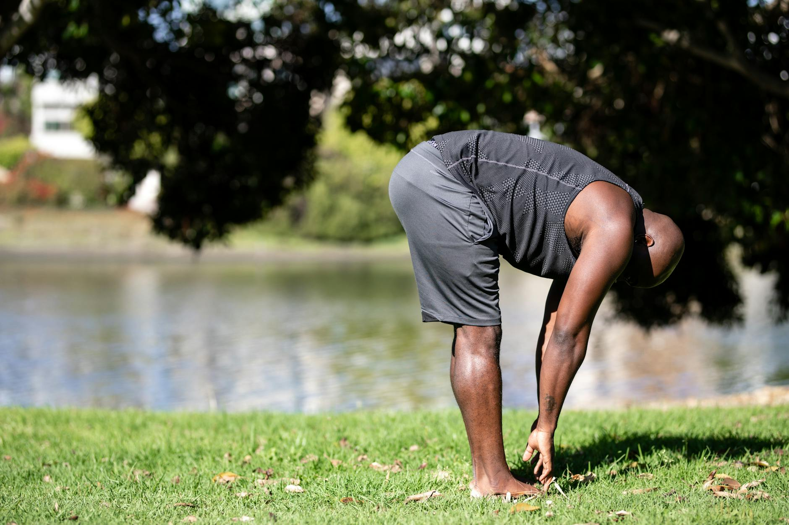

What Daily Habits Boost Longevity?
Key takeaways
- The quest for a longer life is as old as time itself.
- While we can't bottle the fountain of youth, science is increasingly pointing to our daily routines as powerful allies in extending our healthspan and lifespan.
- Focus on: Living Longer, Living Better: Your Daily Rhythm for Longevity.

Living Longer, Living Better: Your Daily Rhythm for Longevity
The quest for a longer life is as old as time itself. While we can't bottle the fountain of youth, science is increasingly pointing to our daily routines as powerful allies in extending our healthspan and lifespan. It's not about drastic overhauls, but about aligning our days with our body's natural rhythms, often called our circadian rhythm. This internal clock influences everything from our sleep-wake cycles to hormone production and cellular repair. By understanding and working with this rhythm, we can make simple, effective changes that add up to significant health benefits.
The Power of a Consistent Sleep Schedule
Sleep is arguably the most critical pillar of longevity. During sleep, our bodies perform vital maintenance: repairing tissues, consolidating memories, and clearing out toxins. Aiming for 7-9 hours of quality sleep per night is essential. But consistency is key. Going to bed and waking up around the same time, even on weekends, helps regulate your circadian rhythm.
Real-life example: Sarah, a 45-year-old marketing manager, struggled with fatigue. She started by setting a strict bedtime of 10:30 PM and a wake-up time of 6:30 AM, even on Saturdays. Within a few weeks, she noticed improved energy levels and better focus at work. She also found that avoiding screens an hour before bed and keeping her bedroom dark and cool made a big difference.
Mindful Eating for a Healthier Gut
What and how we eat significantly impacts our longevity. Focusing on whole, unprocessed foods rich in antioxidants and fiber supports gut health, which is increasingly linked to overall well-being and disease prevention. Think vibrant fruits, vegetables, lean proteins, and healthy fats. Eating mindfully – savoring each bite and paying attention to hunger and fullness cues – can also improve digestion and prevent overeating.
Consider incorporating more anti-inflammatory foods into your diet. Foods like berries, leafy greens, nuts, and fatty fish can help combat chronic inflammation, a known contributor to many age-related diseases. For more ideas, check out our tips on healthy eating habits.
Movement Throughout the Day
Regular physical activity is a cornerstone of a long and healthy life. It strengthens the cardiovascular system, improves mood, and helps maintain a healthy weight. The goal isn't necessarily intense, daily gym sessions, but consistent movement. This could include brisk walks, cycling, swimming, or even simple home workouts.
Break up long periods of sitting. Even short bursts of activity, like a 5-minute walk around the block every hour, can make a difference. Find activities you enjoy to make them sustainable. Learn more about the benefits of regular exercise.
Stress Management Techniques
Chronic stress can take a toll on your health, accelerating aging and increasing the risk of various conditions. Incorporating stress-reducing practices into your daily routine is vital. This could involve mindfulness meditation, deep breathing exercises, yoga, spending time in nature, or engaging in hobbies you love. Finding what works for you is key to managing stress effectively.
Actionable Checklist for Daily Longevity Habits
Here’s a simple checklist to help you integrate these habits:
- Sleep: Aim for 7-9 hours. Maintain a consistent bedtime and wake-up time.
- Nutrition: Prioritize whole foods. Include plenty of fruits, vegetables, and lean protein.
- Movement: Aim for at least 30 minutes of moderate activity most days. Break up sitting time.
- Stress Reduction: Dedicate 10-15 minutes daily to a relaxation practice (e.g., meditation, deep breathing).
- Hydration: Drink plenty of water throughout the day.
Common Mistakes to Avoid
When striving for longevity, it's easy to fall into a few common traps:
- All-or-Nothing Thinking: Believing you have to be perfect. Missing one day doesn't derail your progress.
- Ignoring Your Body’s Signals: Pushing through exhaustion or pain instead of listening to what your body needs.
- Focusing Only on Diet or Exercise: Longevity is holistic; it involves sleep, stress, social connections, and more.
- Seeking Quick Fixes: Sustainable habits build over time. Avoid fads that promise instant results.
Making gradual, consistent changes is more effective than drastic, unsustainable ones. Remember, the goal is to build habits that support your well-being for the long haul. For more insights on mental wellness, explore our other resources.
Educational only — not medical advice.
More in longevity
Related posts

What's a Longevity Daily Routine? Aligning Your Day for a Healthier, Longer Life
Discover how to build a longevity daily routine aligned with scientific evidence. Learn practical tips for better sleep, nutrition, movement
Read more →
Small Changes, Big Health Wins: Habits That Actually Stick
Discover simple, sustainable habit changes that boost your health and well-being. Learn practical tips for lasting results.
Read more →
Can Daily Routines Really Lower Stress Levels?
Discover how simple daily routines can significantly reduce your stress load and improve your overall well-being. Learn practical tips for a
Read more →